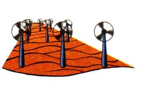
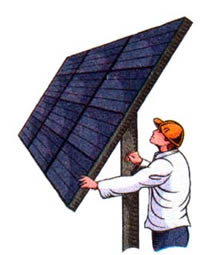
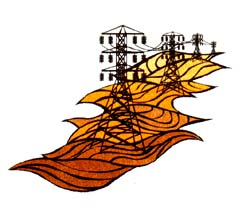

BITS & PIECES
WIND
The U.S. currently has more than 1,600 megawatts of installed windpower generation capacity. This generation capacity produces about three billion kilowatt-hours of electricity each year. That's enough electricity to meet the annual residential electricity needs of more than one million people.
More than 90% of the total wind power produced in the U.S. is generated by three West Coast wind farms (located in Altamont Pass in northern California and Tehachapi and Palm Springs in southern California).
The U.S. possesses enough useable wind resource to produce more electricity than the nation currently uses. The majority of this usable resource blows across the Great Plains region. North Dakota alone has enough suitable wind resource to supply 36% of the electricity consumed in the U.S.
SOLAR
The U.S. annually uses more than 71 trillion British Thermal Units (BTUs) of solar energy (1 million BTUs equals 90 pounds of coal or eight gallons of gasoline). The residential and commercial sectors use 60 trillion BTUs, the industrial - sector 11 trillion BTUs, and utilities 500 billion BTUs. In the last seven years, photovoltaic sales have nearly tripled. More than 84 megawatts of modules were manufactured worldwide in 1995.
GEOTHERMAL
U.S. geothermal power plants currently have a total electricity generation capacity of 2,700 megawatts. This is enough electricity to meet the residential electricity needs of more than 3.5 million people. Most of the country's geothermal resources are located in the western U.S. In fact, the world's largest geothermal power plant--the Geysers Power Plant in northern California--generates more than 1,700 megawatts of power. Known geothermal reserves could supply the entire country with electricity for 30 years.
HYDROELECTRIC
The U.S. is the world's leading producer of hydroelectric power. Hydropower currently provides 92,000 megawatts of electricity generating capacity in the U.S.-- enough to meet the needs of 28 million households. This represents about 10% of the nation's total electricity generation capacity and accounts for almost 50% of all renewable energy used in the U.S. These percentages are unlikely to increase. There are few good sites left to build new large dams, and there is widespread opposition on environmental grounds to the building of new dams.
The nation's largest hydropower plant is the 7,600-megawatt Grand Coulee power station located on the Columbia River in Washington state. The plant is being scaled up to 10,080 megawatts, which will place it second in the world behind a colossal 13,320-megawatt plant in Brazil.
BIOMASS
U.S. utilities use biomass to generate more than 7,500 megawatts of electricity.
This is enough power to meet the energy needs of several million households. Today, various forms of biomass energy account for nearly 4% of all energy consumed, and 45% of renewable energy used, in the United States. Biomass currently supplies 2% of the electricity used in California. It is more expensive than other sources of electricity, principally because it is costly to transport fuel from its source to the incinerator.
--From Utility Guide: The Information Network for Utility Users ( http//www.utilityguide.com/index.html).
|
 |
 |
 |